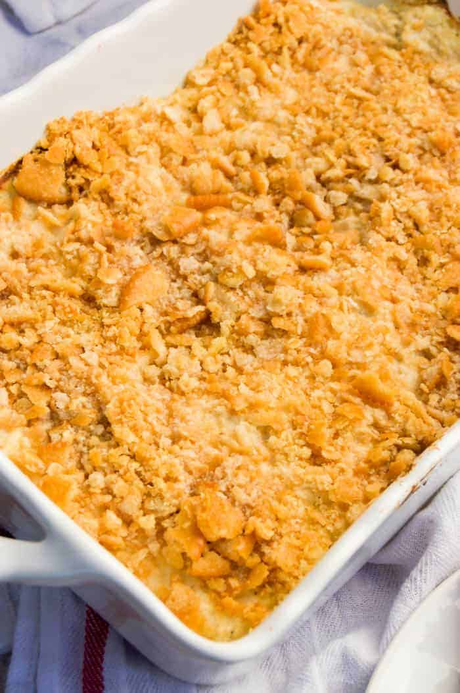

Cheesy Chicken

Description
Cheesy chicken is a delicious casserole-type dish made with only a few simple ingredients. The main ingredients consist of cheddar broccoli soup, chicken breast, and Ritz crackers. It is a staple comfort food in my household!
Ingredients
- 2 Cans of Broccoli Cheese Soup
- 1 Can of Cheddar Cheese Soup
- 1 Pound of Chicken Breast
- 1 Stick of Butter
- 2 Sleeves of Ritz Crackers
Steps
- Preheat oven to 350 degrees F.
- Fill a large pot with water and set on stove to boil.
- Cut chicken breast into bite-sized chunks and add to boiling water.
- Let cook for 3-4 minutes.
- Empty all 3 cans of soup into a glass casserole dish.
- Strain chicken and mix into the casserole dish.
- Melt butter in microwave or pan.
- Crush Ritz crackers in a medium mixing bowl.
- Combine crushed crackers and melted butter and mix thoroughly.
- Coat chicken and soup mixture evenly with cracker topping.
- Bake uncovered in oven for 30 minutes or until golden brown and bubbly.
- Let cool for 5 minutes and serve!